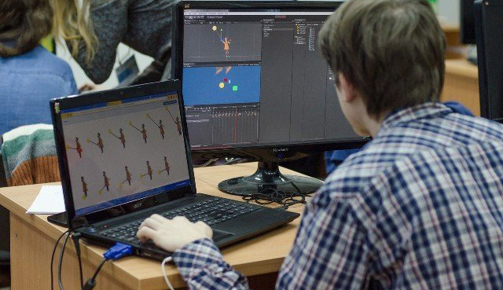
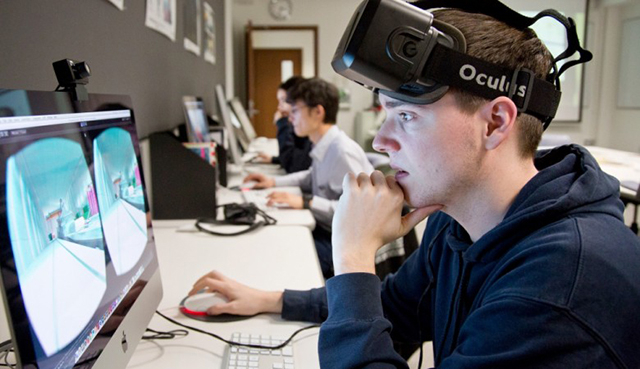

Разработчик игр
 Разработчик игр или gamedeveloper — специалист, занимающийся созданием программного кода, визуализацией и концепцией игры, а также выбором средств для реализации поставленных задач.
 Разработчик может работать как самостоятельно, так и в команде, которая состоит из руководителей, геймдизайнеров, звукорежиссеров, тестировщиков и других IT-специалистов. Состав команды напрямую зависит от бюджета проекта, но если финансирование минимальное, то разработчик игр выполняет функции всех вышеперечисленных специалистов или те задачи, которые он сделать способен.
Для работы в этой сфере необходим диплом программиста. Также разработкой игр могут заниматься дизайнеры мобильных приложений, геймдизайнеры и другие профессионалы из сферы IT, предварительно пройдя короткий подготовительный курс.
Специфика профессии
Для создания простых игр специалист должен великолепно знать программирование, но если он хочет зарабатывать больше, то много времени придется уделять получению новых знаний:
- инструмент Unity и другие движки, которые необходимы для создания 2D и 3D игр
- объектно-ориентированное программирование
- изучение языка программирования C#, Ajax и других
- оптимизация 2D и 3D игр
Gamedeveloper – универсальный специалист, который после обучения должен уметь создавать анимацию, визуальные эффекты, концепцию игры, дизайн, знать основы моделирования и юриспруденции. Да, разработчик, который работает сам на себя, должен уметь не только защищать, но и запатентовать разработанную игру или ПО для нее.
Многие студенты сегодня стремятся освоить эту специальность, но не все добиваются успеха. Лишь самые креативные и талантливые могут получить работу в известных компаниях, а остальные выпускники занимаются разработкой простых игр и получают за эту работу солидное вознаграждение.
Плюсы и минусы профессии
Плюсы
- Опытный и талантливый программист получит за разработку игр достойную заработную плату
- Есть шанс трудоустроиться в известную компанию и получить популярность в определенных кругах
- Специалисты, работающие на себя, могут творчески реализоваться
- Игры для ПК и мобильных устройств пользуются популярностью, поэтому инвесторы охотно вкладывают средства в продвижение игровых программных продуктов
- Профессия дает возможность работать с разными платформами (ОС, IOS/Android и другие)
- Зная языки программирования, программы для создания 3D графики, основы разработки мобильных приложений и другие направления, связанные с профессией, специалист сможет попробовать свои силы в каждой из этих сфер
Минусы
- Разработчик должен отодвигать свои амбиции и творческие замыслы на второй план, ставя на первое место требования инвестора или заказчика
- К опыту и знаниям специалиста выдвигаются серьезные требования, ведь от его профессионализма зависит успешность проекта
Личные качества
Gamedeveloper должен уметь выполнять большой перечень работ и постоянно освежать знания, ведь игровая индустрия не стоит на месте. Поэтому в его характере должна преобладать любознательность, активность и настойчивость.
Разработчик игр должен понимать, что создание игры – это первая ступенька на пути к успеху, ведь нужно собрать команду, найти инвестора, провести рекламную кампанию, которая действительно будет продавать созданный продукт. Поэтому разработчик должен отличаться такими чертами характера:
- стрессоустойчивость
- выносливость
- отсутствие психологических проблем
- склонность к длительной работе
- задатки руководителя
- умение работать в коллективе
- предпринимательская жилка
- хорошо развитая фантазия
Место работы
Современный бизнес постепенно переходит в интернет, поэтому разработчики игр востребованы на рынке труда. Дело в том, что мобильные и браузерные приложения становятся площадкой для рекламы того или иного продукта, а сетевые и обычные компьютерные игры давно уже приносят стабильный доход своим владельцам.
Представители профессии смогут трудоустроиться в агентства и компании, которые занимаются разработкой всех видов игр.
Институты